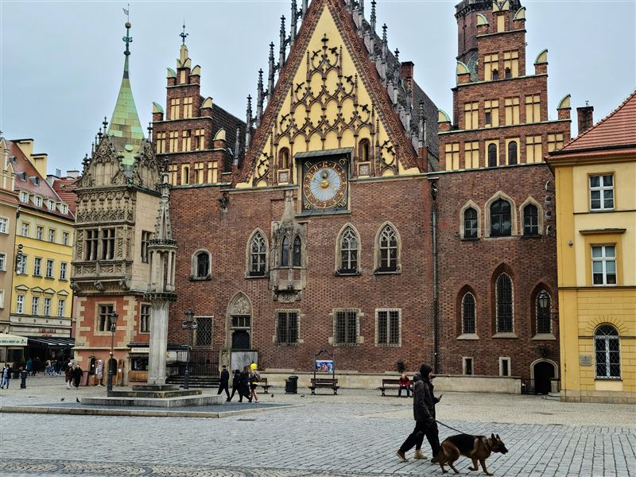
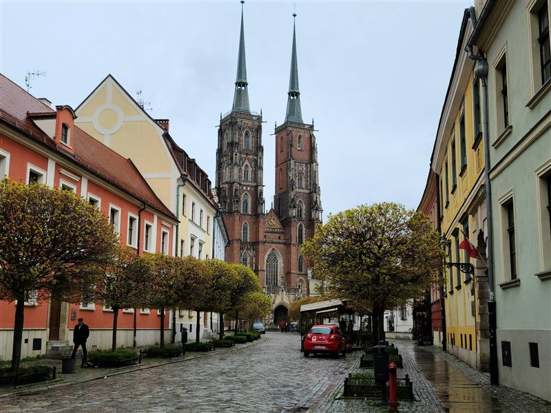
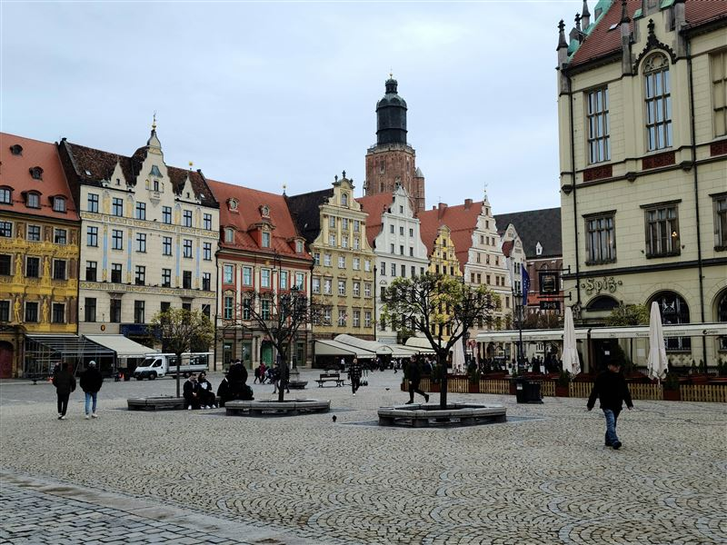
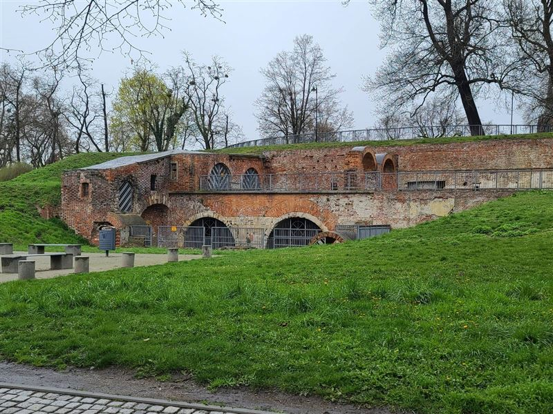
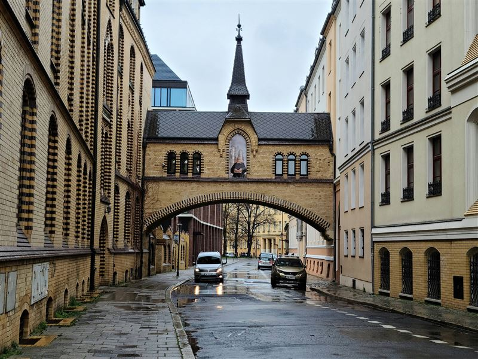
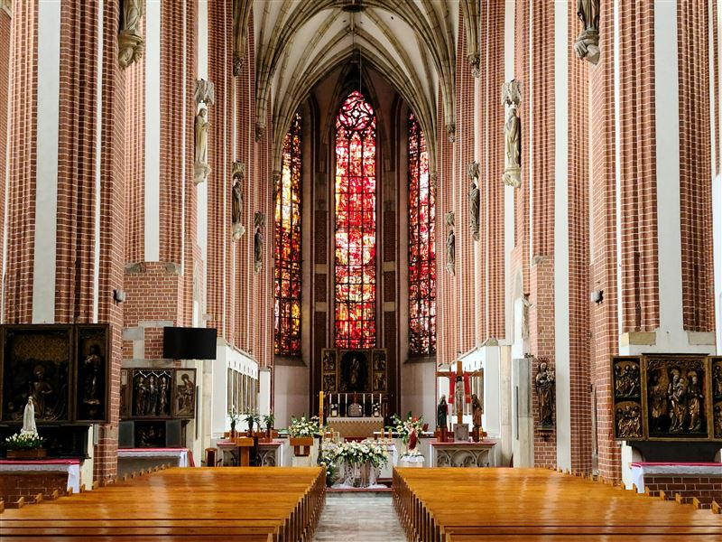
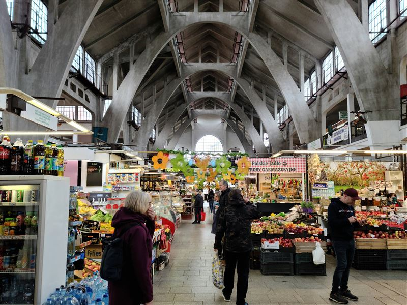
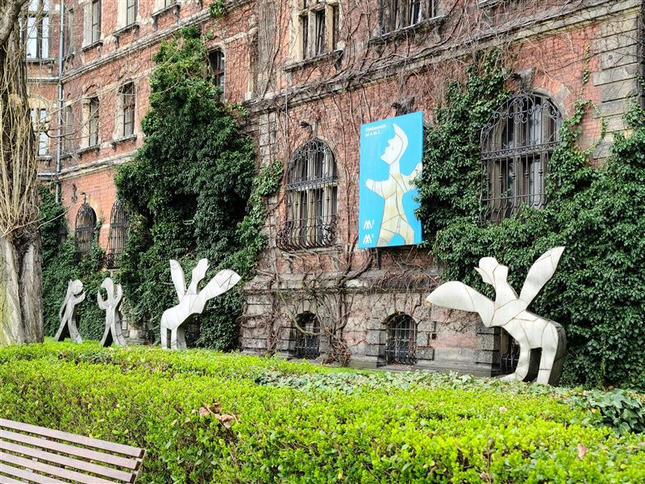

Explore Wrocław
A Brief History
Wrocław developed on Odra River islands as a Piast ducal seat before passing through Bohemian, Habsburg, Prussian, and Polish rule, each layer visible in its market square, cathedral island, and bridges. Trade fairs and textile production brought prosperity in the 19th century, while siege and transfer to Poland after 1945 triggered large-scale reconstruction and resettlement. Gothic and baroque churches, university buildings, and dwarfish street sculptures now mark public space.
Attractions Map
Top Sights & Activities

Wroclaw Old Town Hall
The Old Town Hall grew over several medieval and early modern building phases on the market square and became the civic center of Wrocław. Its facade and halls reflect the political and mercantile life of the city. The Gothic-Renaissance structure houses a museum where visitors can see council chambers, the Great Hall, and the astronomical clock.

Wrocław Cathedral
The Cathedral of St John the Baptist dominates Ostrów Tumski and records the episcopal history of Wrocław from the Middle Ages onward. Its towers and island setting make it one of the main landmarks of the city. The Gothic interior, chapels, and viewing platform on the northern tower offer views over the Odra islands and the cathedral quarter.

Rynek we Wrocławiu
The Rynek remains the large medieval market square around which the commercial and civic core of Wrocław developed. Its townhouses, arcades, and public activity preserve the structure of the historic center. The central cloth hall, fountain, and surrounding tenements create one of the largest market squares in Poland, rebuilt after wartime damage.

Bastion Ceglarski
Bastion Ceglarski preserves part of the early modern defensive landscape near the cathedral island. It records the military edge of the historic city and later use of the riverside promenade. The brick bastion and adjoining paths let visitors walk along the Odra near Ostrów Tumski, where fortifications once guarded the approach to the bishop's district.

Congregation of St. Elizabeth Sisters
The convent of the Sisters of St Elizabeth represents the charitable and religious institutions that expanded with modern Wrocław beyond the medieval core. It reflects the city's Catholic social history in the 19th and 20th centuries. The sisters' work in nursing and education left a network of hospitals and schools that shaped Wrocław's urban charity landscape.

Roman Catholic parish church NMP on the Sand in Wroclaw
St Mary on the Sand stands on the river island quarter and preserves an important Gothic church linked with the monastic and parish life of historic Wrocław. It remains part of the religious landscape leading toward Ostrów Tumski. The brick basilica and cloister gardens sit on a sandbank between Odra channels, giving the church its popular name.

Market Hall
Hala Targowa opened in the early 20th century as a major covered market serving the city center. Its reinforced concrete structure and continuing market use connect historic trade with modern urban infrastructure. Vendors still sell produce, meat, and regional foods under the early modern hall roof near the cathedral island and university district.

National Museum in Wrocław
The National Museum occupies a former government building on the Odra and presents major collections of Silesian and Polish art. It reflects the institutional role of museums in the postwar cultural life of Wrocław. Galleries range from medieval Silesian sculpture to modern Polish painting, documenting a region that changed states several times in the 20th century.